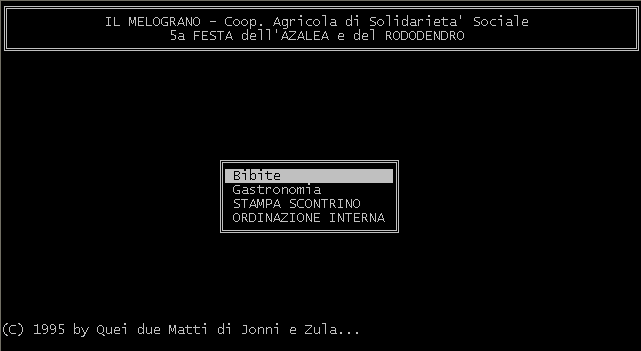

risorse | pc/ms-dos
Programma realizzato per la gestione della cassa della festa annuale dell'azienda di solidarietà sociale ove prestai il servizio civile.
Sviluppato con il Turbo C della (al tempo) Borland assieme al "collega" Jonni Sclauzero, è corredato da un'esauriente documentazione (9KB) poco convenzionale…

Scarica il programma (58KB), oppure i sorgenti (16KB).
Pagina modificata l'8/11/2011